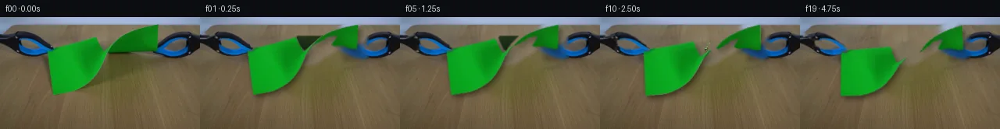

![首帧]()

Round 00
2026-11-06T01:07:06.928757+00:00像素候选变化代码 +375/−0inspection 更新
pixels b5af02c448880ef9 · code 47537f19ae2d958d
查看本轮 generate.py 真实 diff
--- previous/generate.py
+++ current/generate.py
@@ -0,0 +1,375 @@
+"""PixelWorld case_0044: two blue-black grabbers pull a twisted green sheet
+from opposite corners until it tears.
+
+Pure local pixel operations: segmentation of the first frame, Telea plate
+inpainting + anisotropic grain, affine/droop warp sprite rendering, procedural
+soft shadows, an animated edge-on fold, torn-edge rag and fibers.
+Frame 0 is the untouched first_frame.png.
+"""
+from pathlib import Path
+import numpy as np
+import cv2
+from PIL import Image, ImageDraw
+import artifact_io
+
+CASE = Path(__file__).parent
+H, W = 144, 256
+
+f0 = np.asarray(Image.open(CASE / 'first_frame.png').convert('RGB')).astype(np.float32)
+R, G, B = f0[..., 0], f0[..., 1], f0[..., 2]
+LUM = (R + G + B) / 3.0
+
+# ---------------------------------------------------------------- masks
+green_hard = (G > 110) & (R < 100) & (B < 90)
+green_hard = cv2.morphologyEx(green_hard.astype(np.uint8), cv2.MORPH_CLOSE, np.ones((3, 3), np.uint8)).astype(bool)
+
+# soft paper alpha: blur hard mask, keep bleed only on greenish fringe
+paper_alpha = cv2.GaussianBlur(green_hard.astype(np.float32), (3, 3), 0.9)
+fringe_ok = green_hard | ((G > R + 10) & (G > B + 10))
+paper_alpha *= fringe_ok
+paper_alpha = np.clip(paper_alpha, 0, 1)
+
+# split paper into near (drooping) and far (standing) pieces by row segments
+near_hard = np.zeros((H, W), bool)
+far_hard = np.zeros((H, W), bool)
+for y in range(H):
+ xs = np.flatnonzero(green_hard[y])
+ if len(xs) == 0:
+ continue
+ cuts = np.r_[0, np.flatnonzero(np.diff(xs) > 2) + 1, len(xs)]
+ for s, e in zip(cuts[:-1], cuts[1:]):
+ x0, x1 = int(xs[s]), int(xs[e - 1])
+ if y >= 43:
+ near_hard[y, x0:x1 + 1] = True
+ elif x1 <= 145:
+ near_hard[y, x0:x1 + 1] = True
+ else:
+ far_hard[y, x0:x1 + 1] = True
+
+# assign soft fringe pixels to whichever piece is nearer
+dn = cv2.distanceTransform((~near_hard).astype(np.uint8), cv2.DIST_L2, 3)
+df = cv2.distanceTransform((~far_hard).astype(np.uint8), cv2.DIST_L2, 3)
+near_zone = near_hard | ((dn <= df) & (dn <= 2.5))
+far_zone = far_hard | ((df < dn) & (df <= 2.5))
+near_alpha = paper_alpha * near_zone
+far_alpha = paper_alpha * far_zone
+
+# carve fixed ragged torn edges into the sprites (used only from rupture on)
+rng = np.random.default_rng(44)
+def smooth_jitter(vals, win=5):
+ k = np.ones(win) / win
+ return np.convolve(np.pad(vals, (win // 2, win // 2), mode='edge'), k, mode='valid')
+
+jag_n = smooth_jitter(rng.uniform(-2.0, 2.0, 64))
+jag_f = smooth_jitter(rng.uniform(-2.0, 2.0, 64))
+
+def carve_edge(alpha, side, y0, y1, jag):
+ a = alpha.copy()
+ for y in range(y0, y1):
+ xs = np.flatnonzero(alpha[y] > 0.25)
+ if len(xs) == 0:
+ continue
+ xe = xs[-1] if side == 'right' else xs[0]
+ cut = int(round(xe + jag[y] + (0.6 if rng.random() < 0.3 else 0)))
+ if side == 'right':
+ a[y, max(0, cut - 1):cut + 1] *= 0.55
+ a[y, cut + 1:] = 0.0
+ else:
+ a[y, cut:cut + 2] *= 0.55
+ a[y, :cut] = 0.0
+ return a
+
+near_alpha_torn = carve_edge(near_alpha, 'right', 24, 47, jag_n)
+far_alpha_torn = carve_edge(far_alpha, 'left', 23, 45, jag_f)
+
+# tool masks
+blue = (B > 110) & (B > R + 45) & (B > G + 25)
+black_tool = (LUM < 52) & ((B - R) > -12)
… diff truncated; 288 more lines …